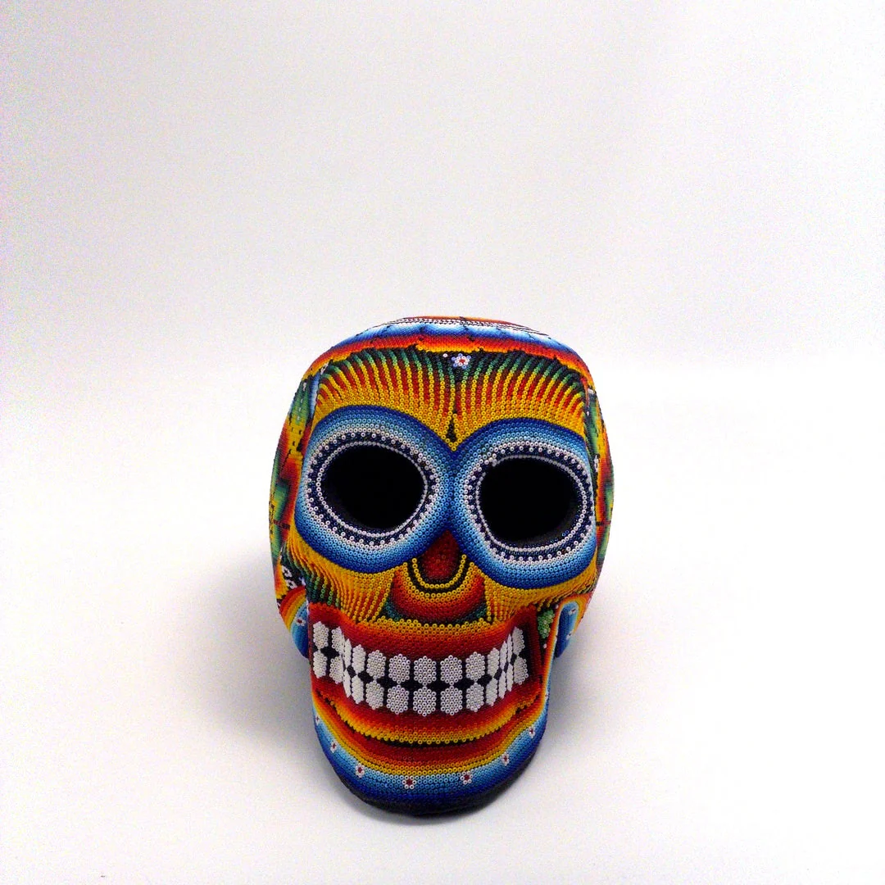
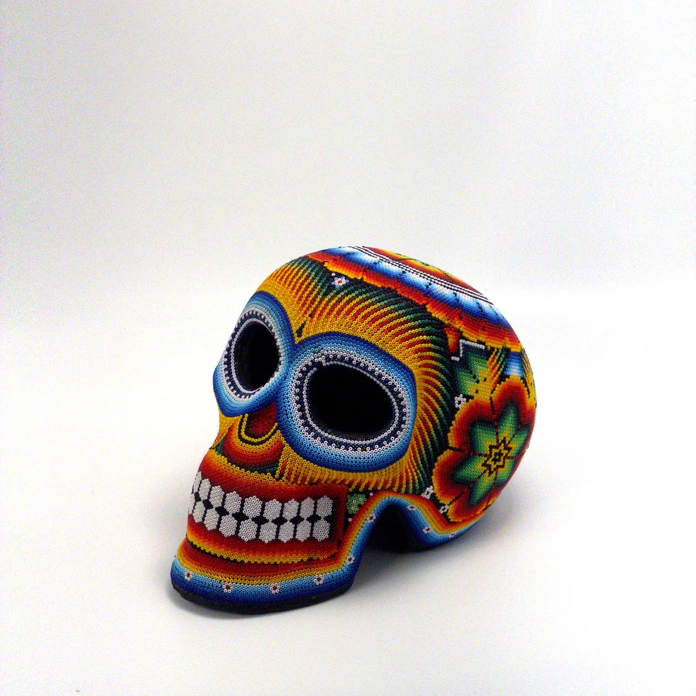
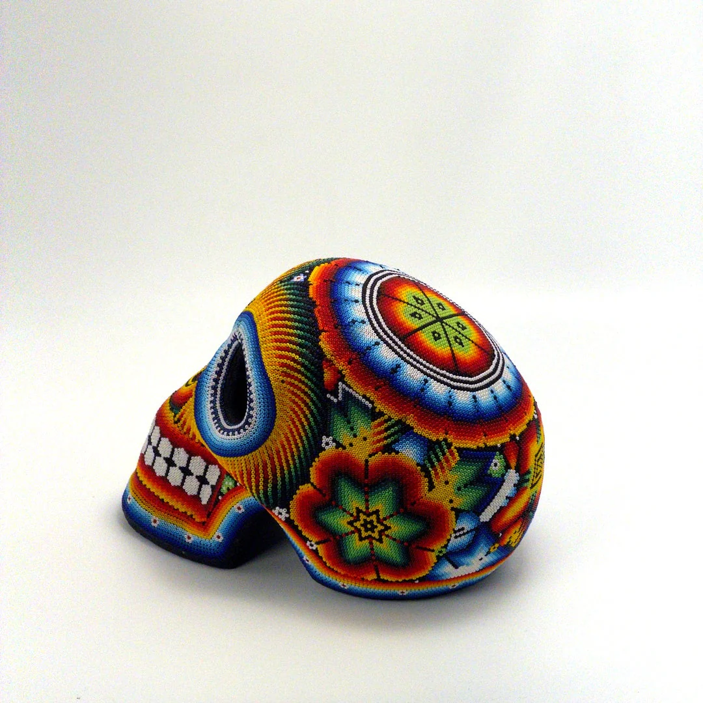
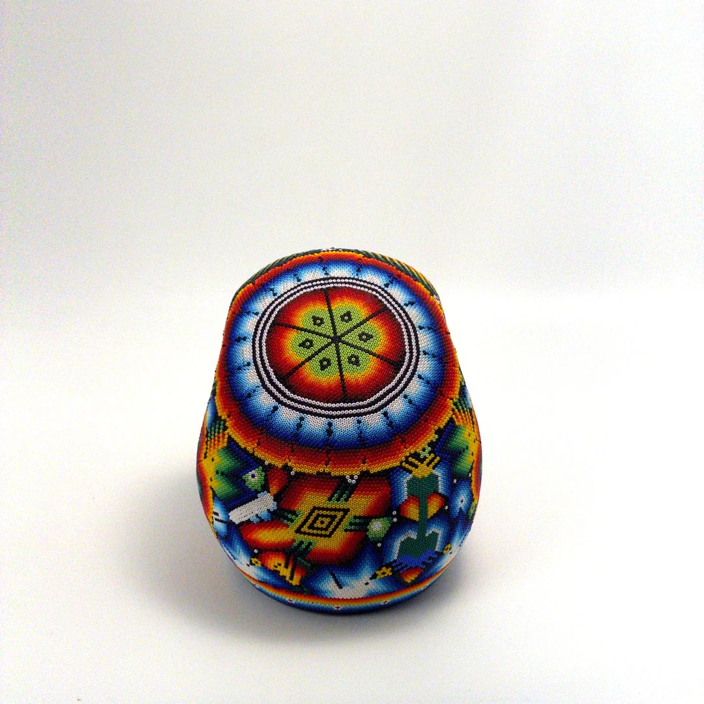
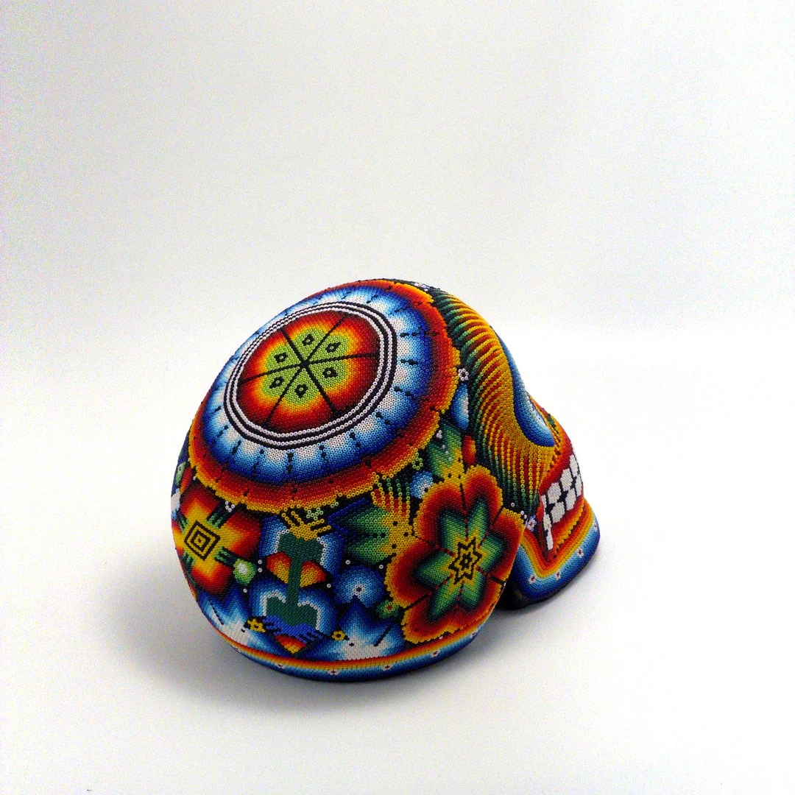

Galería Teokaye · Arte Tradicional de Nayarit
Hilo sobre cera de abeja. Más de un metro. Más de un año de trabajo. Una sola pieza en el mundo.

La obra
Cada nierika es el resultado de cientos de horas de trabajo meticuloso. Paula construye la composición con paciencia extraordinaria — presionando cada hilo sobre la cera, sin posibilidad de corrección. El resultado es una pieza que ninguna máquina puede replicar.




El Nierika es una de las expresiones artísticas más complejas de las tradiciones de Nayarit. Cada pieza se construye presionando hilo de estambre, milímetro a milímetro, sobre una base de cera de abeja. No hay pincel ni corrección posible — cada línea es definitiva.
Paula García Serrano (Xurabe) nació en La Palmita, municipio del Nayar, Nayarit. Aprendió a trabajar con cera e hilo desde los 3 años, en una familia donde estas técnicas se transmiten de generación en generación.
Este cuadro representa más de un año de trabajo continuo. Es técnica ancestral ejecutada con precisión extraordinaria — una pieza que pocos artistas vivos pueden crear a esta escala.
El proceso
La artista define la paleta de colores y las formas que compondrán la pieza. Este proceso puede tomar semanas antes de colocar el primer hilo.
La tabla de madera se cubre con una mezcla de cera de abeja y resina natural. Esta base es el "lienzo" del nierika — flexible pero permanente.
Cada hilo se presiona con las yemas de los dedos, milímetro a milímetro. No hay pincel, no hay corrección posible — cada línea es definitiva.
Una pieza de este tamaño requiere cientos de horas de trabajo sostenido. No se puede apresurar — el hilo no perdona.
La artista revisa cada sección de la pieza, asegurando que los colores y formas logren el efecto visual deseado.
Elementos visuales
Cada nierika incorpora figuras y colores de las tradiciones artísticas de Nayarit. El comprador recibirá documentación detallada sobre los elementos específicos de esta pieza.
Hilos de estambre en tonos vibrantes seleccionados a mano. Cada color se coloca intencionalmente para crear contraste y profundidad.
Motivos geométricos y figurativos característicos del arte de Nayarit, transmitidos de generación en generación.
Diseño radial que guía la mirada desde el centro hacia los bordes. Cada sección complementa el conjunto.
Más de un metro de diámetro. Piezas de este tamaño son raras — la mayoría de los artistas trabajan en formatos menores.
* El comprador recibirá certificado de autenticidad con descripción detallada de los elementos de la pieza.
La artista
Nació en La Palmita, municipio del Nayar, Nayarit. Aprendió técnicas tradicionales de su región desde los 3 años. Trabaja con enchaquirado en cera de abeja, hilo sobre cera y tejido de chaquira. Piezas de esta escala y complejidad son raras — pocos artistas dominan las tres técnicas.
La Palmita, Nayar, Nayarit · Actualmente en San Pedro CholulaEl trabajo de Paula no es una reproducción de patrones — es el resultado de décadas de práctica en técnicas que pocos artistas dominan. Cada pieza que sale de sus manos representa cientos de horas de trabajo manual y conocimiento transmitido de generación en generación.
Adquiere esta pieza
Las piezas de artistas tradicionales de Nayarit son buscadas por coleccionistas en México y el extranjero. Este nierika es una obra de arte única e irrepetible.
La conversación es sin compromiso. Resolvemos todas tus dudas antes de cualquier decisión.
Cada pieza de Xurabe incluye certificado firmado por la artista con descripción detallada del simbolismo, técnica y fecha de creación.
Empaque especializado para proteger la pieza en tránsito. Coordinamos envío a cualquier ciudad de México, EUA, Canadá y Europa.
Te acompañamos en todo el proceso. Respondemos todas tus preguntas sobre la pieza, el proceso de pago y el envío.
Lo que dicen
"Un lugar de sagrado compartir donde siempre se reúnen personas mágicas e inspiradoras. Lleno de arte, comida deliciosa, café increíble."
"Es uno de los lugares más auténticos y vibrantes de Cholula. El arte es increíble y el ambiente es único."
"Tienen juegos de mesa, buen servicio, café delicioso, comida muy rica, el arte es increíble."
Preguntas frecuentes
Cuando salga de la galería, desaparece del mundo. Si la estás considerando, el momento es ahora.
Iniciar conversación por WhatsAppSin compromiso · Respondemos en menos de 24 horas